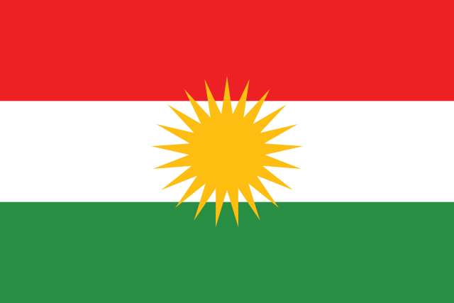

Historical Relevance: Region Culture (کوردی: کەلتووری هەرێم)
The Abbasid Caliphate (الخلافة العباسية)

The Abbasid Caliphate, established in 750 CE, succeeded the Umayyad Caliphate and became a center of Islamic civilization during the Golden Age. Spanning a vast territory, it included regions such as the Arabian Peninsula, Persia, Kurdistan, parts of Central Asia, North Africa, and the Levant. The capital, Baghdad, became a hub for learning, culture, and trade. The Abbasid Caliphate declined over time, facing internal strife, external invasions, and the eventual fragmentation of its territories.
الخلافة العباسية
الخلافة العباسية، التي تأسست عام 750 م، خلفت الخلافة الأموية وأصبحت مركزاً للحضارة الإسلامية خلال العصر الذهبي. امتدت على مساحة شاسعة، وشملت مناطق مثل شبه الجزيرة العربية، وبلاد فارس، وكردستان، وأجزاء من آسيا الوسطى، وشمال أفريقيا، والمشرق. وأصبحت العاصمة بغداد مركزاً للتعلم والثقافة والتجارة. تراجعت الخلافة العباسية مع مرور الوقت، وواجهت صراعات داخلية وغزوات خارجية وتجزئة أراضيها في نهاية المطاف.
Kurdistan
(کوردستان)
Kurdistan (کوردستان) is a geo-cultural region in the Middle East roughly encompasing parts of Turkey, Syria, Iran, and Iraq. While not recognized as a country in the modern day, an Kurdish autonomous region exists in Northern Iraq. Kurdistan and Kurdish people have a rich cultural and political history and were part of the Islamic empire from around 600 AD until its fall in the 1200s. Kurdish culture is highlighted in Cuneiform's Nothern, Southern, and Western regions.
کوردستان
کوردستان ناوچەیەکی جیۆ-کەلتوورییە لە ڕۆژهەڵاتی ناوەڕاست کە بە نزیکەیی بەشێک لە تورکیا، سوریا، ئێران و عێراق تێکەڵ دەکات. لە کاتێکدا لە ئێستادا وەک وڵاتێک دانی پێناسە نەکراوە، بەڵام ناوچەیەکی ئۆتۆنۆمی کوردی لە باکووری عێراق هەیە. کوردستان و گەلی کورد مێژوویەکی کولتووری و سیاسی دەوڵەمەندیان هەیە و بەشێک بوون لە ئیمپراتۆریەتی ئیسلامی لە دەوروبەری ۶۰۰ی زایینیەوە تا ڕووخانی لە ۱۲۰۰کان. کلتووری کوردی لە ناوچەکانی نۆترێن، باشوور و ڕۆژئاوای کونیفۆرم تیشک دەخاتە سەر.
Kurdish Language
(زمانی کوردی)

Kurdish (Kurdî, کوردی) is a language/a group of languages and dialects spoken by Kurds in the geo-cultural region of Kurdistan. Kurdish languages are varying and often not mutally intelligible. The main three dialects or languages of Kurdish are Northern Kurdish (Kurmanji), Central Kurdish (Sorani), and Southern Kurdish (Xwarîn). There are about 25 million Kurdish speakers in the world.
زمانی کوردی
زمانی کوردی بریتییە لە کۆمەڵێک زمان و دیالێکت کە لەلایەن کوردەکانەوە قسەی پێ دەکرێت لە ناوچەی جیۆ-کولتووری کوردستان. زمانە کوردییەکان جیاوازن و زۆرجار بە شێوەیەکی شێواو تێگەیشتوو نین. سێ زمانی سەرەکی یان زمانی کوردی بریتین لە کوردی باکوور (کورمانجی) ، کوردیی ناوەندی (سۆرانی) ، و کوردی باشوور (Xwarîn). نزیکەی 25 ملیۆن زمانی کوردی لە جیهاندا هەن.

Pakistan and the Abbasids
(پاکستان اور عباسی)

The Islamic Empire's influence in the Pakistan region began with Arab invasions in the 7th century, causing Islam to spread across the Indian subcontinent. The Mughal Empire, a prominent Islamic dynasty, further shaped the cultural landscape of Pakistan until the British colonization. Islam continues to play a central role in the country's identity and societal fabric.